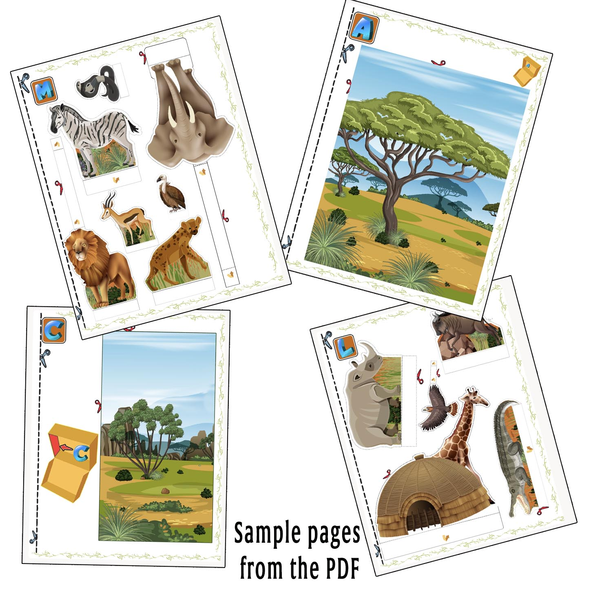
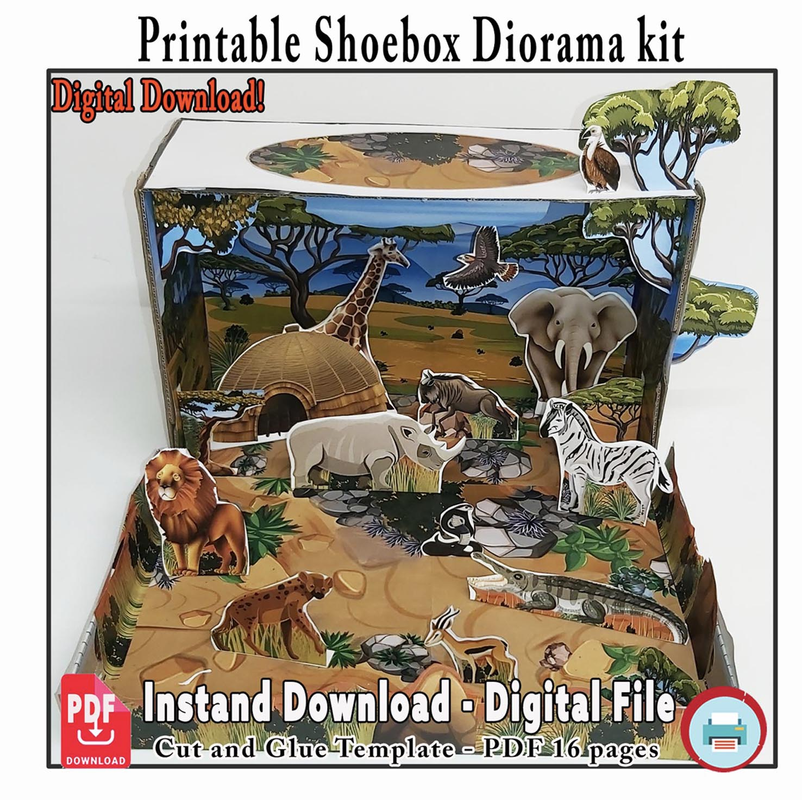

EVS Projects · 3D Models · Habitat Projects · School Activities
Savanna Habitat · EVS · 3D School Model
Savanna Habitat Project for Kids
Need a savanna habitat project for school?
This printable 3D model helps children create a colourful grassland scene with African animals, trees and layered habitat scenery for EVS homework, animal projects and school assignments.
An Easy Savanna Project for Busy Parents
If your child needs a savanna model, African animals project or EVS habitat assignment, this printable project provides an easy starting point.
The backgrounds, animals and scenery are already illustrated, so children can spend their time cutting, arranging and building the model.
They can decide where to place the animals, add their own materials and create a unique version of the savanna habitat at home.
What Children Can Learn
A savanna habitat model helps children explore grassland ecosystems and the animals that live there.
They can learn about open landscapes, scattered trees, water sources and the relationship between different animals and their environment.
The project can be used for EVS activities, grassland habitat lessons, African animal projects, environmental studies, homework and school exhibitions.
See What Is Included
The printable set contains savanna backgrounds, grassland scenery and a variety of animals including a lion, elephant, giraffe, zebra, rhinoceros and other wildlife.

Example pages from the printable savanna habitat project.
From Printable Pages to a 3D Savanna Model
Children can use the printed backgrounds and standing animals to create a layered scene instead of a flat school poster.
The different pieces can be placed throughout the habitat to give the finished project depth and a stronger 3D effect.

How to Make the Savanna Habitat Project
1
Print
Print the savanna project pages at home on A4 paper or slightly thicker paper.
2
Cut
Cut out the African animals, trees, backgrounds and other savanna scenery.
3
Build
Arrange and glue the pieces inside a shoebox or similar cardboard box to create the 3D habitat.
See the Finished Savanna Model
The finished scene combines open grassland, trees and standing animals to create a colourful savanna ecosystem.
Children can change the arrangement and decide where each animal should live inside the model.
Watch the Savanna Habitat Project
Watch the short video to see how the African animals, trees and grassland scenery come together in the finished 3D savanna school project.
Projects Made by Other Families
Families can use the same printable project and still create very different results.
Children can change the placement of the animals, add stones, small plants or other craft materials and make the project their own.
Customer examples and feedback from families who built the savanna habitat project.
Want to Make This Savanna Habitat?
The printable project provides the illustrated backgrounds, animals and scenery needed to start building the model at home.
You only need a printer, scissors, glue and a suitable box.
The India download and checkout option will be added here soon.